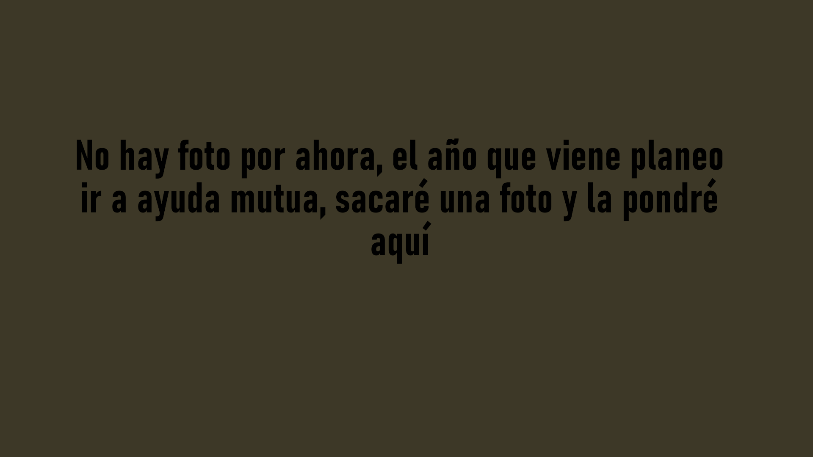
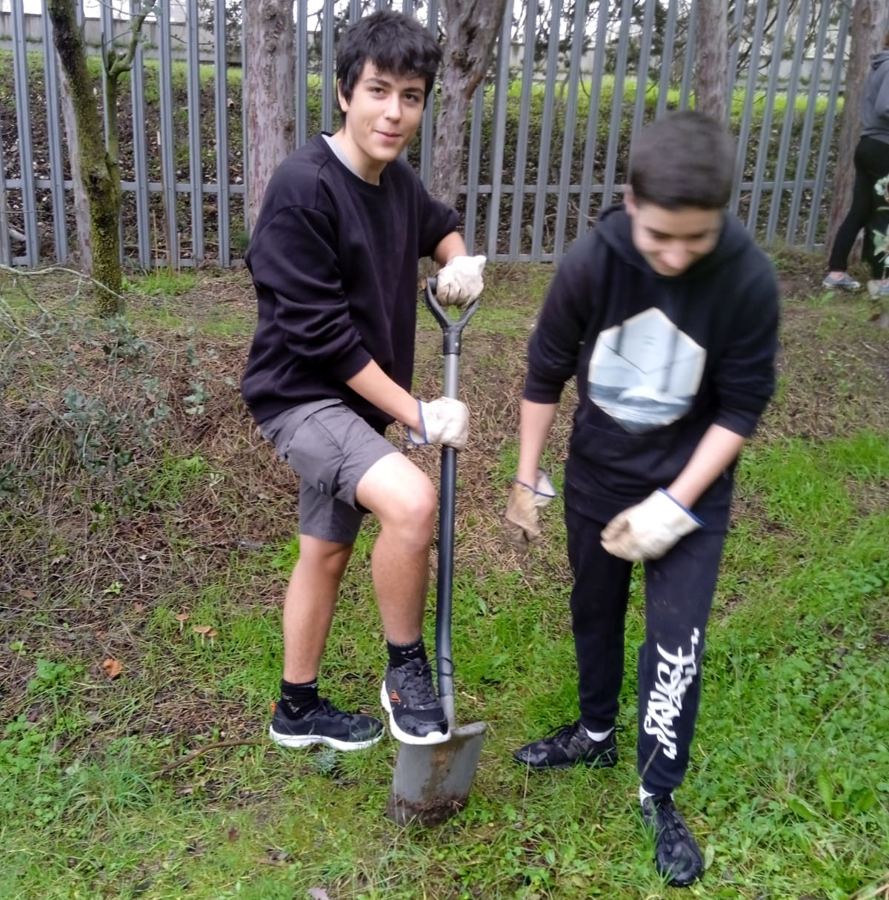
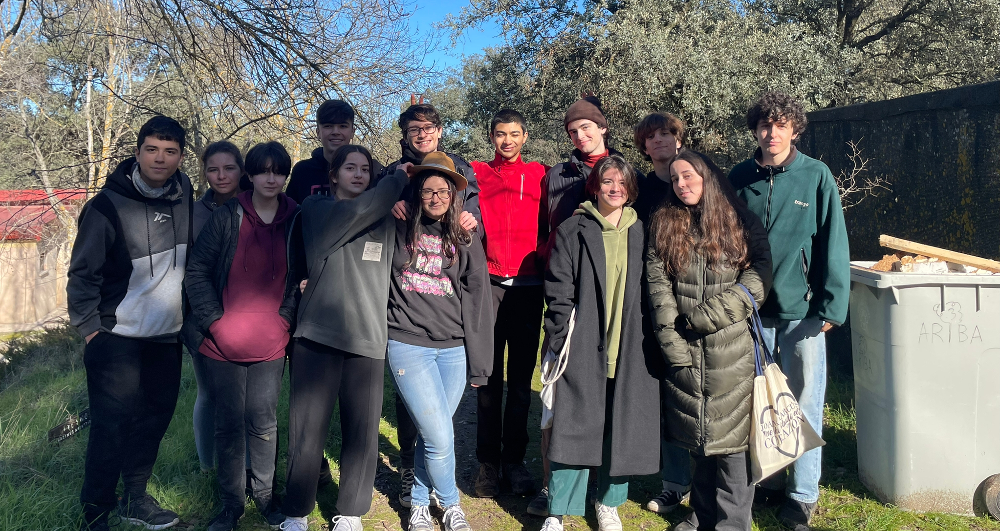
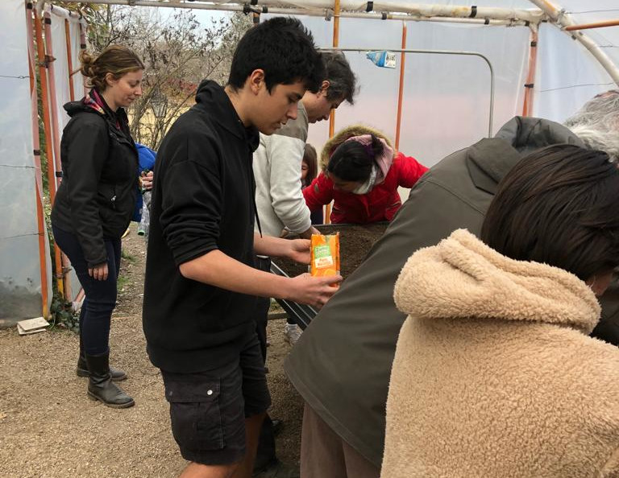
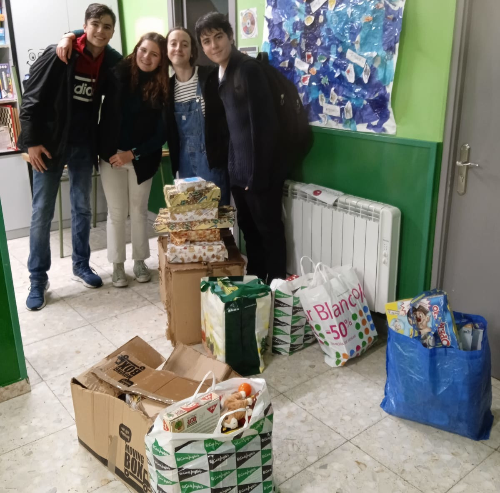
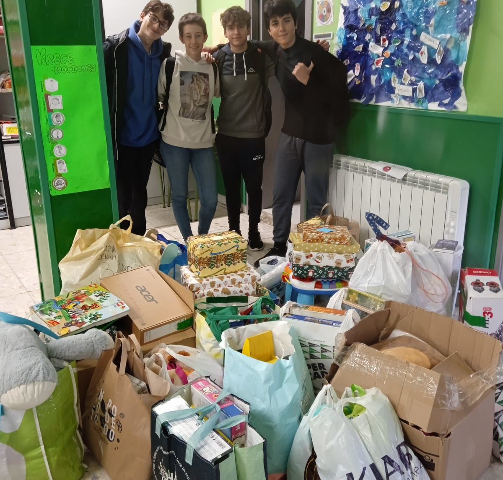
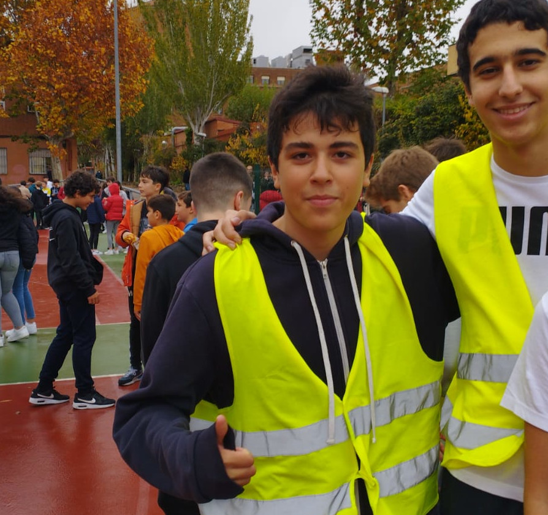
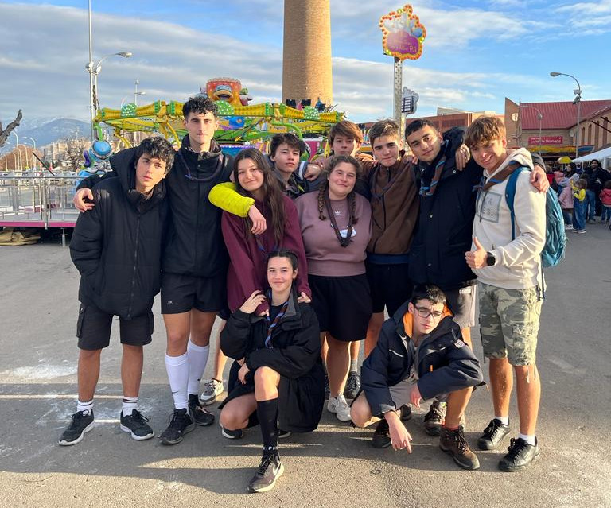

Ayuda mutua
Siempre me ha gustado cuidar y enseñar de niños, en los scouts organizmos cumpleaños pagados, pero nunca he hecho realmente un servicio a la comunidad. Cuando se me presentó la oportunidad, no dudé en apuntarme al CAS de ayuda mutua. Al principio, se me presentó el reto de empezar a enseñar, teniendo en cuenta que nunca había enseñado conceptos (solo haberles organizado juegos). Con el tiempo, fuí adquiriendo confianza y desarrollé habilidades de enseñanza mientras ayudaba a niños a aprobar sus exámenes de matemáticas. Me hubiera gustado ir a ayuda mutua más. Mi plan inicial era ir todos los martes a ayudar, pero el segundo trimestre me sobrepasó y no asistí mucho. A pesar de ello pudé ir casi todos los martes del primer y tercer trimestre, además de un jueves en el que no había casi asistencia de mis compañeros. Los niños necesitan alguien que les ayude en todo momento, esto fue una de las cosas que aprendí.
ARBA
Desde pequeño he estado rodeado por la naturaleza, pero nunca hice nada para repararla o ayudar al medio-ambiente. Fue en la feria CAS cuando me metí al grupo de ARBA. El procedimiento normal en el vivero ubicado cerca de la estación de lago constaba de cavar un agujero en el suelo con una pala y luego insertar un retoño de un árbol para que posteriormente creciera. Otros días, recortámos envases de leche para insertar semillas y tierra para que los retoños previamente mencionados crecieran. Alguna otra vez cogíamos semillas y le quitábamos una pulpa para luega sembrarlas en tierra. Después de este año, he podido brindar un servicio a la comunidad y mejorar un poco el medio-ambiente, reducir un poco mi huella de carbono. Me ha aportado una conciencia ecológica que he podido poner en uso en varias ocasiones. Puede que esta anécdota sea un poco banal, pero una vez en los scouts comimos dos bolsas de pistachos, nos olvidamos y yo y un amigo acabamos recogiendo las cáscaras porque aunque sean biodegradables no estábamos seguros de que el entorno de montaña específico en el que estábamos poseyera las encimas necesarias para descomponer ese tipo de pistacho, o de si las vacas de ganado iban a ingerirlos y posiblemente desarrollar problemas estomacales. En total, asistí 6 veces al vivero: 2 por trimestre.
Primer trimestre. Plantando retoños para que crezcan árboles posteriormente:
Segundo trimestre. Foto grupal después de haber pelado cáscaras de semillas:
Tercer trimestre. Insertando tierra y semillas en un envase para que crezca en un futuro:
Krecer: Recogida de regalos
A pesar de que en este CAS no interactuara directamente con los niños, considero que aportamos notablemente algo a la comunidad. Las coordinadoras Elena y Malena reunieron todos los regalos que pudieron en el instituo para que nosotros los lleváramos al local de Krecer, en el que se acogen niños con problemas de diversa índole y juegan todo el día. Mi papel en este voluntariado fue el de transportar los regalos desde el instituo hasta Vallecas, donde se ubicaba el centro. Esta organización me ayudó a reflexionar sobre la situación de algunos niños y la importancia de los juguetes en el desarrollo mental de estos. Tranportamos un total de 40 regalos en los dos viajes que hicimos, de los cuales fui el único que estuvo en los dos.
En la primera recogida nos llovió mientras transportábamos los regalos, pero no desistimos y los entregamos a la asociación a tiempo.
En la segunda recogida nos dimos cuenta de que faltaba una cantidad ingente de regalos de ser repartida, por lo que cada uno cogimos una cantidad muy poco razonable de cajas para tranpostarlas. Afortunadamente no nos llovió.
Torneo baloncesto
Ser un organizador del torneo de baloncesto me parecía una actividad muy conveniente para pasar el patio generando valor para la comunidad. Me pusé un chaleco y arbitré un patio a la semana durante 6 semanas. Esta experiencia fue gratificante porque pudé poner en práctica mis oxidados conocimientos de baloncesto y ayudar a que otras personas hicieran ejercicio físico a la vez que se diviertieran.
Voluntariado con niños
Uno de los objetivos de mi grupo scout es hacer un voluntariado al trimestre y el campamento del primer trimestre en Granada no fue menos. Nos reunimos con la organización ALFA (Almanjáyar En Familia), que se encargaba de cuidar a niños con problemas en sus familias. Este voluntariado realmente me afectó. A cada esculta(cada uno de los integrantes del grupo scout) nos asignaron dos niños pequeños. Uno de los míos tenía TDH, no sabía contenerse y llevaba una mochila rota que siempre se dejaba en algún sitio(no paraba de llamarme maeshhtro). El otro niño era muy quieto, pero creo que creció en un hogar sin figura paterna. Me abrieron los ojos a la realidad de algunos niños que necesitan estar en entornos especiales para poder crecer y convertirse en ciudadanos responsables. Fuimos a una feria, les llevamos y cuidamos en atracciones durante todo el día.
